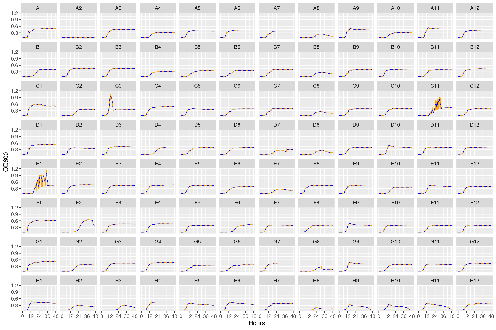
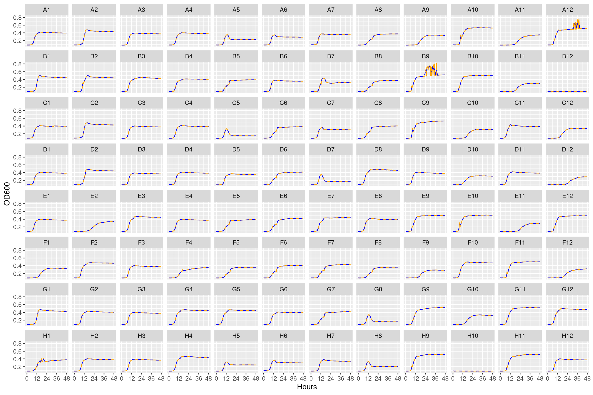
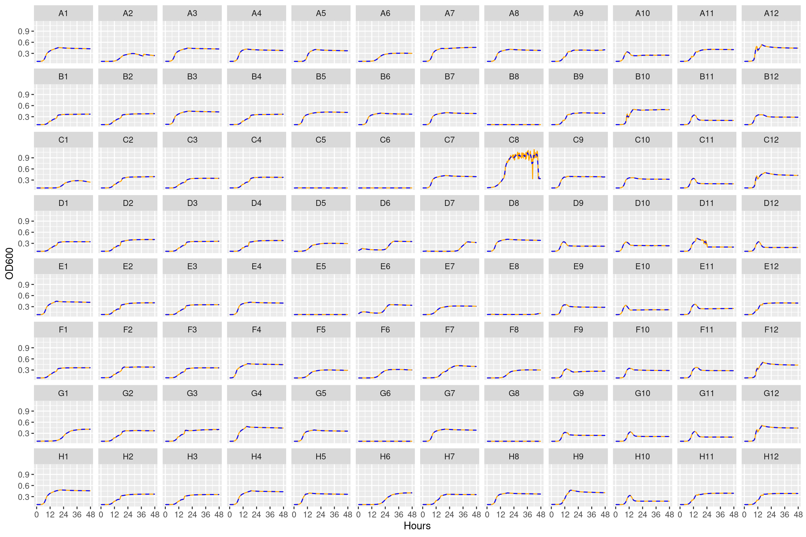
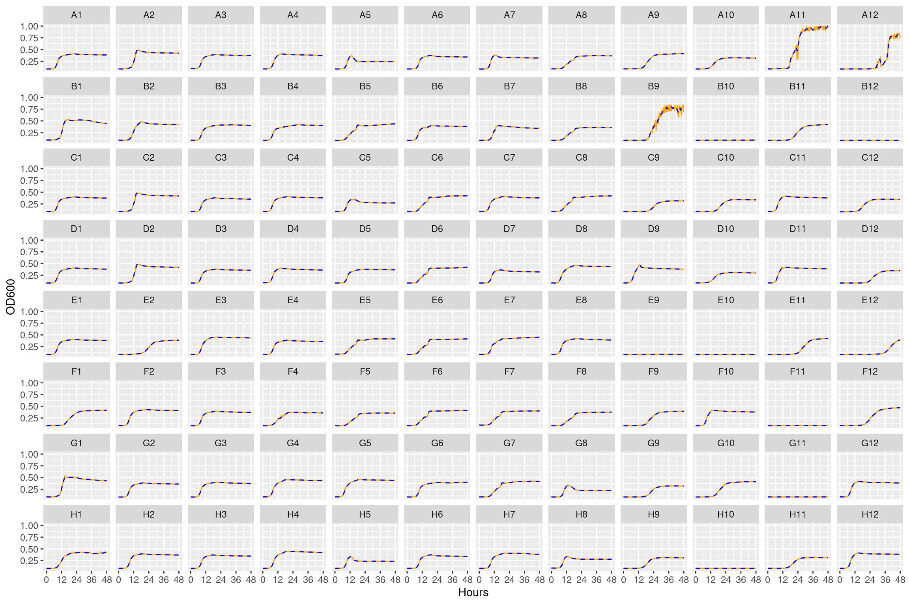

After 12 transfers of the experiment 32 clones were randomly picked from each replicate/home environemnt/measurement environmentn on selective plates. These clones were grown in all the different YSK conditions (including in the presence of the Ciliate) for 48 hours on the log-phase 600 plate reader. From this data we can estimate the growth rate and the carrying capacity of each species in the different conditions.
In this notebook we will read the output from the log phase plate reader and format it for later plotting and analysis.
2 Setup
Loads required libraries and sets global variables
Show/hide code
library(here)
here() starts at /home/shane/Documents/projects/experiments/hambiEvoVEnv
── Conflicts ────────────────────────────────────────── tidyverse_conflicts() ──
✖ dplyr::filter() masks stats::filter()
✖ dplyr::lag() masks stats::lag()
ℹ Use the conflicted package (<http://conflicted.r-lib.org/>) to force all conflicts to become errors
Rows: 9248 Columns: 98
── Column specification ────────────────────────────────────────────────────────
Delimiter: ";"
dbl (96): A1, A2, A3, A4, A5, A6, A7, A8, A9, A10, A11, A12, B1, B2, B3, B4...
time (1): Time
ℹ Use `spec()` to retrieve the full column specification for this data.
ℹ Specify the column types or set `show_col_types = FALSE` to quiet this message.
In this section growth curves are thinned and smoothed.
4.1 Thinning
One thing I’ve realized is that many methods for inferring growth rates struggle when the density of observations is too high (e.g., one measurement every 5 minutes). In reality I’ve found that taking one measurement every 15 minutes is sufficient. Here we thin it out so that measurements are in 20 minute intervals. This seems to improve the fitting procedure a lot without much of a cost.
The rounding step is necessary because the plate readers actually don’t always output consistent intervals. Sometimes it is 00:30:06 and other times it is 00:30:05. This becomes a problem later on when trying to combine multiple runs at once
Show/hide code
round_any <-function(x, accuracy, f=round){f(x/ accuracy) * accuracy}gcurves_thin <- gcurves_slurped_fmt %>% dplyr::mutate(seconds =round_any(seconds, 100)) %>%# 1200 is 20 minutes so by ensuring modulo = 0 we include only time points# 0, 20, 40, 60 minutes and so on... dplyr::filter(seconds %%1200==0)
4.2 Smoothing
For the growth curves we will do some smoothing to reduce the “jaggedness” of the curves a bit because these were run before the optimized logphase600 protocol was in place (better breatheasy seals plus new sealing tool). We use the slider package with a 5 point rolling mean for each focal observation we take the mean including the focal point and two points before and after.
Here we will smooth out some of the higher frequency noise in the curves. First we wil smooth using a moving median approach then smooth that using a moving average approach. We will also try a min then mean smoothing approach. Some of the curves are really wacky with lots of erratic peaks…
Here we will manually inspect the different growth curves. We will compile a list of the worst curves with the strangest features to exclude from downstream analysis (into a blacklist file).
The subscripts at the ends of the plate contain informations:
The _1 subscript is the “bact” condition with no additional treatment
The _2 subscript is the “bact_pred” condition which is a ciliate predator treatment
The _3 subscript is the “bact_strep” condition which has streptomycin
The _4 subscript is the “bact_pred_strep” condition which has both streptomycin and ciliates present
5.1 Bact conditions
5.1.1 Plate 1

Figure 1: Growth curves for the bacteria only conditions on Plate 1. Orange solid line is raw data, blue line is 5-point rolling mean smooth.
5.1.2 Plate 2
Figure 2: Growth curves for the bacteria only conditions on Plate 2. Orange solid line is raw data, blue line is 5-point rolling mean smooth.
5.1.3 Plate 3

Figure 3: Growth curves for the bacteria only conditions on Plate 3. Orange solid line is raw data, blue line is 5-point rolling mean smooth.
5.1.4 Plate 4
Figure 4: Growth curves for the bacteria only conditions on Plate 4. Orange solid line is raw data, blue line is 5-point rolling mean smooth.
5.1.5 Plate 5
Figure 5: Growth curves for bacteria only conditions on Plate 5. Orange solid line is raw data, blue line is 5-point rolling mean smooth.
5.1.6 Plate 6
Figure 6: Growth curves for bacteria only conditions on Plate 6. Orange solid line is raw data, blue line is 5-point rolling mean smooth.
5.1.7 Plate 7
Figure 7: Growth curves for bacteria only conditions on Plate 7. Orange solid line is raw data, blue line is 5-point rolling mean smooth.
5.1.8 Plate 8
Figure 8: Growth curves for bacteria only conditions on Plate 8. Orange solid line is raw data, blue line is 5-point rolling mean smooth.
5.2 Predator conditions
5.2.1 Plate 1
Figure 9: Growth curves for the ciliate conditions on Plate 1. Orange solid line is raw data, blue line is 5-point rolling mean smooth.
5.2.2 Plate 2
Figure 10: Growth curves for the ciliate conditions on Plate 2. Orange solid line is raw data, blue line is 5-point rolling mean smooth.
5.2.3 Plate 3
Figure 11: Growth curves for the ciliate conditions on Plate 3. Orange solid line is raw data, blue line is 5-point rolling mean smooth.
5.2.4 Plate 4
Figure 12: Growth curves for the ciliate conditions on Plate 4. Orange solid line is raw data, blue line is 5-point rolling mean smooth.
5.2.5 Plate 5
Figure 13: Growth curves for ciliate conditions on Plate 5. Orange solid line is raw data, blue line is 5-point rolling mean smooth.
5.2.6 Plate 6
Figure 14: Growth curves for ciliate conditions on Plate 6. Orange solid line is raw data, blue line is 5-point rolling mean smooth.
5.2.7 Plate 7
Figure 15: Growth curves for ciliate conditions on Plate 7. Orange solid line is raw data, blue line is 5-point rolling mean smooth.
5.2.8 Plate 8
Figure 16: Growth curves for ciliate conditions on Plate 8. Orange solid line is raw data, blue line is 5-point rolling mean smooth.
5.3 Streptomycin conditions
5.3.1 Plate 1
Figure 17: Growth curves for the Streptomycin conditions on Plate 1. Orange solid line is raw data, blue line is 5-point rolling mean smooth.
5.3.2 Plate 2

Figure 18: Growth curves for the Streptomycin conditions on Plate 2. Orange solid line is raw data, blue line is 5-point rolling mean smooth.
5.3.3 Plate 3

Figure 19: Growth curves for the Streptomycin conditions on Plate 3. Orange solid line is raw data, blue line is 5-point rolling mean smooth.
5.3.4 Plate 4
Figure 20: Growth curves for the Streptomycin conditions on Plate 4. Orange solid line is raw data, blue line is 5-point rolling mean smooth.
5.3.5 Plate 5
Figure 21: Growth curves for Streptomycin conditions on Plate 5. Orange solid line is raw data, blue line is 5-point rolling mean smooth.
5.3.6 Plate 6
Figure 22: Growth curves for Streptomycin conditions on Plate 6. Orange solid line is raw data, blue line is 5-point rolling mean smooth.
5.3.7 Plate 7
Figure 23: Growth curves for Streptomycin conditions on Plate 7. Orange solid line is raw data, blue line is 5-point rolling mean smooth.
5.3.8 Plate 8
Figure 24: Growth curves for Streptomycin conditions on Plate 8. Orange solid line is raw data, blue line is 5-point rolling mean smooth.
5.4 Predator + Streptomycin conditions
5.4.1 Plate 1
Figure 25: Growth curves for the Ciliate + Streptomycin conditions on Plate 1. Orange solid line is raw data, blue line is 5-point rolling mean smooth.
5.4.2 Plate 2
Figure 26: Growth curves for the Ciliate + Streptomycin conditions on Plate 2. Orange solid line is raw data, blue line is 5-point rolling mean smooth.
5.4.3 Plate 3
Figure 27: Growth curves for the Ciliate + Streptomycin conditions on Plate 3. Orange solid line is raw data, blue line is 5-point rolling mean smooth.
5.4.4 Plate 4
Figure 28: Growth curves for the Ciliate + Streptomycin conditions on Plate 4. Orange solid line is raw data, blue line is 5-point rolling mean smooth.
5.4.5 Plate 5
Figure 29: Growth curves for Ciliate + Streptomycin conditions on Plate 5. Orange solid line is raw data, blue line is 5-point rolling mean smooth.
5.4.6 Plate 6
Figure 30: Growth curves for Ciliate + Streptomycin conditions on Plate 6. Orange solid line is raw data, blue line is 5-point rolling mean smooth.
5.4.7 Plate 7
Figure 31: Growth curves for Ciliate + Streptomycin conditions on Plate 7. Orange solid line is raw data, blue line is 5-point rolling mean smooth.
5.4.8 Plate 8
Figure 32: Growth curves for Ciliate + Streptomycin conditions on Plate 8. Orange solid line is raw data, blue line is 5-point rolling mean smooth.
Source Code
---title: "Predator and STR Clones monoculture growth workflow i) inspection of growth curves"author: "Shane Hogle"date: today---# IntroductionAfter 12 transfers of the experiment 32 clones were randomly picked from each replicate/home environemnt/measurement environmentn on selective plates. These clones were grown in all the different YSK conditions (including in the presence of the Ciliate) for 48 hours on the log-phase 600 plate reader. From this data we can estimate the growth rate and the carrying capacity of each species in the different conditions.In this notebook we will read the output from the log phase plate reader and format it for later plotting and analysis.# SetupLoads required libraries and sets global variables```{r}library(here)library(tidyverse)library(stringr)library(stringi)library(lubridate)library(fs)source(here::here("R", "utils_generic.R"))data_raw <- here::here("_data_raw", "monocultures", "20230112_clone_phenotyping")```## FunctionsDefine functions to make later plotting easier```{r}plotplate <-function(df, dfxy, unsmoothed=TRUE, predicted=FALSE, plate, rows, cols, page){ dffilt <- dplyr::filter(df, plate == {{ plate }}) xyfilt <-if (!is.null(dfxy)){ left_join(dfxy, distinct(dffilt, id, well, plate), by =join_by(id)) %>%drop_na()}ggplot(dffilt, aes(x = hours)) +list(if (unsmoothed) {ggplot2::geom_line(aes(y=OD600), color ="orange", lty =1)},if (predicted) {ggplot2::geom_line(aes(y=predicted), color ="orange")}, if (!is.null(dfxy)) {ggplot2::geom_point(data = xyfilt, aes(x = x, y = y), color ="red", size =2)}, ggplot2::geom_line(aes(y=OD600_smooth_avg), color ="blue", lty=2), ggplot2::labs(x ="Hours", y ="OD600"), ggplot2::scale_x_continuous(breaks =seq(0, 48, 12), labels =seq(0, 48, 12)), ggforce::facet_wrap_paginate(~ well, nrow = rows, ncol = cols, page = page), #scales = "free_y" ggplot2::theme(axis.text =element_text(size =9)) )}```# Read dataGet list of logphase files```{r}# set up directory structuresamppaths <- fs::dir_ls(path = here::here(data_raw, "logphase600"),all =FALSE,recurse =TRUE,type ="file",glob ="*.csv",regexp =NULL,invert =FALSE,fail =TRUE)```Read the files in the list in a loop. Then do some minor formatting that correctly formats the measurement time and pivots the tibble to long format```{r}gcurves_slurped <- readr::read_delim(samppaths, comment ="#", delim =";",escape_double =FALSE,trim_ws =TRUE, id ="file_name") gcurves_slurped_fmt <- gcurves_slurped %>% dplyr::mutate(plate =str_extract(file_name, "A\\d_\\d")) %>% dplyr::select(-file_name) %>% dplyr::relocate(plate) %>% dplyr::mutate(hours = lubridate::time_length(lubridate::hms(Time), unit ="hours")) %>% dplyr::mutate(seconds = lubridate::time_length(lubridate::hms(Time), unit ="seconds")) %>% dplyr::select(-Time) %>% tidyr::pivot_longer(c(-plate, -hours, -seconds), names_to ="well", values_to ="OD600") %>% dplyr::mutate(well =factor(well, levels =paste(rep(LETTERS[1:8], each =12), 1:12, sep ="")))```# Format growth curvesIn this section growth curves are thinned and smoothed.## ThinningOne thing I've realized is that many methods for inferring growth rates struggle when the density of observations is too high (e.g., one measurement every 5 minutes). In reality I've found that taking one measurement every 15 minutes is sufficient. Here we thin it out so that measurements are in 20 minute intervals. This seems to improve the fitting procedure a lot without much of a cost.The rounding step is necessary because the plate readers actually don't always output consistent intervals. Sometimes it is 00:30:06 and other times it is 00:30:05. This becomes a problem later on when trying to combine multiple runs at once```{r}round_any <-function(x, accuracy, f=round){f(x/ accuracy) * accuracy}gcurves_thin <- gcurves_slurped_fmt %>% dplyr::mutate(seconds =round_any(seconds, 100)) %>%# 1200 is 20 minutes so by ensuring modulo = 0 we include only time points# 0, 20, 40, 60 minutes and so on... dplyr::filter(seconds %%1200==0)```## SmoothingFor the growth curves we will do some smoothing to reduce the "jaggedness" of the curves a bit because these were run before the optimized logphase600 protocol was in place (better breatheasy seals plus new sealing tool). We use the `slider` package with a 5 point rolling mean for each focal observation we take the mean including the focal point and two points before and after.- [See here](https://stackoverflow.com/questions/77240913/effective-ways-to-remove-outliers-in-a-timeseries/77325412#77325412) for a useful thread: - [This answer](https://stackoverflow.com/a/77282605) seems promising- [Potentially also promising](https://stackoverflow.com/a/77264172)Here we will smooth out some of the higher frequency noise in the curves. First we wil smooth using a moving median approach then smooth that using a moving average approach. We will also try a min then mean smoothing approach. Some of the curves are really wacky with lots of erratic peaks...```{r}gcurves_thin_sm <- gcurves_thin %>% dplyr::group_by(plate, well) %>% dplyr::mutate(OD600_smooth_md = slider::slide_dbl(OD600, median, .before =2, .after =2)) %>% dplyr::mutate(OD600_smooth_avg = slider::slide_dbl(OD600, mean, .before =2, .after =2)) %>% dplyr::mutate(OD600_smooth_md_avg = slider::slide_dbl(OD600_smooth_md, mean, .before =2, .after =2)) %>%ungroup()readr::write_tsv(gcurves_thin_sm, here::here(data_stp_cl, "gcurves_smoothed_thinned.tsv"))```# Inspect growth curvesHere we will manually inspect the different growth curves. We will compile a list of the worst curves with the strangest features to exclude from downstream analysis (into a blacklist file).The subscripts at the ends of the plate contain informations:1. The `_1` subscript is the "bact" condition with no additional treatment2. The `_2` subscript is the "bact_pred" condition which is a ciliate predator treatment3. The `_3` subscript is the "bact_strep" condition which has streptomycin4. The `_4` subscript is the "bact_pred_strep" condition which has both streptomycin and ciliates present## Bact conditions### Plate 1::: {#fig-01}```{r}#| fig.width: 12#| fig.height: 8#| echo: false#| warning: falseplotplate(gcurves_thin_sm, dfxy=NULL, unsmoothed=TRUE, predicted=FALSE, plate="A1_1", rows=8, cols=12, page=1)```Growth curves for the **bacteria only** conditions on **Plate 1**. Orange solid line is raw data, blue line is 5-point rolling mean smooth.:::### Plate 2::: {#fig-02}```{r}#| fig.width: 12#| fig.height: 8#| echo: false#| warning: falseplotplate(gcurves_thin_sm, dfxy=NULL, unsmoothed=TRUE, predicted=FALSE, plate="A2_1", rows=8, cols=12, page=1)```Growth curves for the **bacteria only** conditions on **Plate 2**. Orange solid line is raw data, blue line is 5-point rolling mean smooth.:::### Plate 3::: {#fig-03}```{r}#| fig.width: 12#| fig.height: 8#| echo: false#| warning: falseplotplate(gcurves_thin_sm, dfxy=NULL, unsmoothed=TRUE, predicted=FALSE, plate="A3_1", rows=8, cols=12, page=1)```Growth curves for the **bacteria only** conditions on **Plate 3**. Orange solid line is raw data, blue line is 5-point rolling mean smooth.:::### Plate 4::: {#fig-04}```{r}#| fig.width: 12#| fig.height: 8#| echo: false#| warning: falseplotplate(gcurves_thin_sm, dfxy=NULL, unsmoothed=TRUE, predicted=FALSE, plate="A4_1", rows=8, cols=12, page=1)```Growth curves for the **bacteria only** conditions on **Plate 4**. Orange solid line is raw data, blue line is 5-point rolling mean smooth.:::### Plate 5::: {#fig-05}```{r}#| fig.width: 12#| fig.height: 8#| echo: false#| warning: falseplotplate(gcurves_thin_sm, dfxy=NULL, unsmoothed=TRUE, predicted=FALSE, plate="A5_1", rows=8, cols=12, page=1)```Growth curves for **bacteria only** conditions on **Plate 5**. Orange solid line is raw data, blue line is 5-point rolling mean smooth.:::### Plate 6::: {#fig-06}```{r}#| fig.width: 12#| fig.height: 8#| echo: false#| warning: falseplotplate(gcurves_thin_sm, dfxy=NULL, unsmoothed=TRUE, predicted=FALSE, plate="A6_1", rows=8, cols=12, page=1)```Growth curves for **bacteria only** conditions on **Plate 6**. Orange solid line is raw data, blue line is 5-point rolling mean smooth.:::### Plate 7::: {#fig-07}```{r}#| fig.width: 12#| fig.height: 8#| echo: false#| warning: falseplotplate(gcurves_thin_sm, dfxy=NULL, unsmoothed=TRUE, predicted=FALSE, plate="A7_1", rows=8, cols=12, page=1)```Growth curves for **bacteria only** conditions on **Plate 7**. Orange solid line is raw data, blue line is 5-point rolling mean smooth.:::### Plate 8::: {#fig-08}```{r}#| fig.width: 12#| fig.height: 8#| echo: false#| warning: falseplotplate(gcurves_thin_sm, dfxy=NULL, unsmoothed=TRUE, predicted=FALSE, plate="A8_1", rows=8, cols=12, page=1)```Growth curves for **bacteria only** conditions on **Plate 8**. Orange solid line is raw data, blue line is 5-point rolling mean smooth.:::## Predator conditions### Plate 1::: {#fig-09}```{r}#| fig.width: 12#| fig.height: 8#| echo: false#| warning: falseplotplate(gcurves_thin_sm, dfxy=NULL, unsmoothed=TRUE, predicted=FALSE, plate="A1_2", rows=8, cols=12, page=1)```Growth curves for the **ciliate** conditions on **Plate 1**. Orange solid line is raw data, blue line is 5-point rolling mean smooth.:::### Plate 2::: {#fig-10}```{r}#| fig.width: 12#| fig.height: 8#| echo: false#| warning: falseplotplate(gcurves_thin_sm, dfxy=NULL, unsmoothed=TRUE, predicted=FALSE, plate="A2_2", rows=8, cols=12, page=1)```Growth curves for the **ciliate** conditions on **Plate 2**. Orange solid line is raw data, blue line is 5-point rolling mean smooth.:::### Plate 3::: {#fig-11}```{r}#| fig.width: 12#| fig.height: 8#| echo: false#| warning: falseplotplate(gcurves_thin_sm, dfxy=NULL, unsmoothed=TRUE, predicted=FALSE, plate="A3_2", rows=8, cols=12, page=1)```Growth curves for the **ciliate** conditions on **Plate 3**. Orange solid line is raw data, blue line is 5-point rolling mean smooth.:::### Plate 4::: {#fig-12}```{r}#| fig.width: 12#| fig.height: 8#| echo: false#| warning: falseplotplate(gcurves_thin_sm, dfxy=NULL, unsmoothed=TRUE, predicted=FALSE, plate="A4_2", rows=8, cols=12, page=1)```Growth curves for the **ciliate** conditions on **Plate 4**. Orange solid line is raw data, blue line is 5-point rolling mean smooth.:::### Plate 5::: {#fig-13}```{r}#| fig.width: 12#| fig.height: 8#| echo: false#| warning: falseplotplate(gcurves_thin_sm, dfxy=NULL, unsmoothed=TRUE, predicted=FALSE, plate="A5_2", rows=8, cols=12, page=1)```Growth curves for **ciliate** conditions on **Plate 5**. Orange solid line is raw data, blue line is 5-point rolling mean smooth.:::### Plate 6::: {#fig-14}```{r}#| fig.width: 12#| fig.height: 8#| echo: false#| warning: falseplotplate(gcurves_thin_sm, dfxy=NULL, unsmoothed=TRUE, predicted=FALSE, plate="A6_2", rows=8, cols=12, page=1)```Growth curves for **ciliate** conditions on **Plate 6**. Orange solid line is raw data, blue line is 5-point rolling mean smooth.:::### Plate 7::: {#fig-15}```{r}#| fig.width: 12#| fig.height: 8#| echo: false#| warning: falseplotplate(gcurves_thin_sm, dfxy=NULL, unsmoothed=TRUE, predicted=FALSE, plate="A7_2", rows=8, cols=12, page=1)```Growth curves for **ciliate** conditions on **Plate 7**. Orange solid line is raw data, blue line is 5-point rolling mean smooth.:::### Plate 8::: {#fig-16}```{r}#| fig.width: 12#| fig.height: 8#| echo: false#| warning: falseplotplate(gcurves_thin_sm, dfxy=NULL, unsmoothed=TRUE, predicted=FALSE, plate="A8_2", rows=8, cols=12, page=1)```Growth curves for **ciliate** conditions on **Plate 8**. Orange solid line is raw data, blue line is 5-point rolling mean smooth.:::## Streptomycin conditions### Plate 1::: {#fig-17}```{r}#| fig.width: 12#| fig.height: 8#| echo: false#| warning: falseplotplate(gcurves_thin_sm, dfxy=NULL, unsmoothed=TRUE, predicted=FALSE, plate="A1_3", rows=8, cols=12, page=1)```Growth curves for the **Streptomycin** conditions on **Plate 1**. Orange solid line is raw data, blue line is 5-point rolling mean smooth.:::### Plate 2::: {#fig-18}```{r}#| fig.width: 12#| fig.height: 8#| echo: false#| warning: falseplotplate(gcurves_thin_sm, dfxy=NULL, unsmoothed=TRUE, predicted=FALSE, plate="A2_3", rows=8, cols=12, page=1)```Growth curves for the **Streptomycin** conditions on **Plate 2**. Orange solid line is raw data, blue line is 5-point rolling mean smooth.:::### Plate 3::: {#fig-19}```{r}#| fig.width: 12#| fig.height: 8#| echo: false#| warning: falseplotplate(gcurves_thin_sm, dfxy=NULL, unsmoothed=TRUE, predicted=FALSE, plate="A3_3", rows=8, cols=12, page=1)```Growth curves for the **Streptomycin** conditions on **Plate 3**. Orange solid line is raw data, blue line is 5-point rolling mean smooth.:::### Plate 4::: {#fig-20}```{r}#| fig.width: 12#| fig.height: 8#| echo: false#| warning: falseplotplate(gcurves_thin_sm, dfxy=NULL, unsmoothed=TRUE, predicted=FALSE, plate="A4_3", rows=8, cols=12, page=1)```Growth curves for the **Streptomycin** conditions on **Plate 4**. Orange solid line is raw data, blue line is 5-point rolling mean smooth.:::### Plate 5::: {#fig-21}```{r}#| fig.width: 12#| fig.height: 8#| echo: false#| warning: falseplotplate(gcurves_thin_sm, dfxy=NULL, unsmoothed=TRUE, predicted=FALSE, plate="A5_3", rows=8, cols=12, page=1)```Growth curves for **Streptomycin** conditions on **Plate 5**. Orange solid line is raw data, blue line is 5-point rolling mean smooth.:::### Plate 6::: {#fig-22}```{r}#| fig.width: 12#| fig.height: 8#| echo: false#| warning: falseplotplate(gcurves_thin_sm, dfxy=NULL, unsmoothed=TRUE, predicted=FALSE, plate="A6_3", rows=8, cols=12, page=1)```Growth curves for **Streptomycin** conditions on **Plate 6**. Orange solid line is raw data, blue line is 5-point rolling mean smooth.:::### Plate 7::: {#fig-23}```{r}#| fig.width: 12#| fig.height: 8#| echo: false#| warning: falseplotplate(gcurves_thin_sm, dfxy=NULL, unsmoothed=TRUE, predicted=FALSE, plate="A7_3", rows=8, cols=12, page=1)```Growth curves for **Streptomycin** conditions on **Plate 7**. Orange solid line is raw data, blue line is 5-point rolling mean smooth.:::### Plate 8::: {#fig-24}```{r}#| fig.width: 12#| fig.height: 8#| echo: false#| warning: falseplotplate(gcurves_thin_sm, dfxy=NULL, unsmoothed=TRUE, predicted=FALSE, plate="A8_3", rows=8, cols=12, page=1)```Growth curves for **Streptomycin** conditions on **Plate 8**. Orange solid line is raw data, blue line is 5-point rolling mean smooth.:::## Predator + Streptomycin conditions### Plate 1::: {#fig-25}```{r}#| fig.width: 12#| fig.height: 8#| echo: false#| warning: falseplotplate(gcurves_thin_sm, dfxy=NULL, unsmoothed=TRUE, predicted=FALSE, plate="A1_4", rows=8, cols=12, page=1)```Growth curves for the **Ciliate + Streptomycin** conditions on **Plate 1**. Orange solid line is raw data, blue line is 5-point rolling mean smooth.:::### Plate 2::: {#fig-26}```{r}#| fig.width: 12#| fig.height: 8#| echo: false#| warning: falseplotplate(gcurves_thin_sm, dfxy=NULL, unsmoothed=TRUE, predicted=FALSE, plate="A2_4", rows=8, cols=12, page=1)```Growth curves for the **Ciliate + Streptomycin** conditions on **Plate 2**. Orange solid line is raw data, blue line is 5-point rolling mean smooth.:::### Plate 3::: {#fig-27}```{r}#| fig.width: 12#| fig.height: 8#| echo: false#| warning: falseplotplate(gcurves_thin_sm, dfxy=NULL, unsmoothed=TRUE, predicted=FALSE, plate="A3_4", rows=8, cols=12, page=1)```Growth curves for the **Ciliate + Streptomycin** conditions on **Plate 3**. Orange solid line is raw data, blue line is 5-point rolling mean smooth.:::### Plate 4::: {#fig-28}```{r}#| fig.width: 12#| fig.height: 8#| echo: false#| warning: falseplotplate(gcurves_thin_sm, dfxy=NULL, unsmoothed=TRUE, predicted=FALSE, plate="A4_4", rows=8, cols=12, page=1)```Growth curves for the **Ciliate + Streptomycin** conditions on **Plate 4**. Orange solid line is raw data, blue line is 5-point rolling mean smooth.:::### Plate 5::: {#fig-29}```{r}#| fig.width: 12#| fig.height: 8#| echo: false#| warning: falseplotplate(gcurves_thin_sm, dfxy=NULL, unsmoothed=TRUE, predicted=FALSE, plate="A5_4", rows=8, cols=12, page=1)```Growth curves for **Ciliate + Streptomycin** conditions on **Plate 5**. Orange solid line is raw data, blue line is 5-point rolling mean smooth.:::### Plate 6::: {#fig-30}```{r}#| fig.width: 12#| fig.height: 8#| echo: false#| warning: falseplotplate(gcurves_thin_sm, dfxy=NULL, unsmoothed=TRUE, predicted=FALSE, plate="A6_4", rows=8, cols=12, page=1)```Growth curves for **Ciliate + Streptomycin** conditions on **Plate 6**. Orange solid line is raw data, blue line is 5-point rolling mean smooth.:::### Plate 7::: {#fig-31}```{r}#| fig.width: 12#| fig.height: 8#| echo: false#| warning: falseplotplate(gcurves_thin_sm, dfxy=NULL, unsmoothed=TRUE, predicted=FALSE, plate="A7_4", rows=8, cols=12, page=1)```Growth curves for **Ciliate + Streptomycin** conditions on **Plate 7**. Orange solid line is raw data, blue line is 5-point rolling mean smooth.:::### Plate 8::: {#fig-32}```{r}#| fig.width: 12#| fig.height: 8#| echo: false#| warning: falseplotplate(gcurves_thin_sm, dfxy=NULL, unsmoothed=TRUE, predicted=FALSE, plate="A8_4", rows=8, cols=12, page=1)```Growth curves for **Ciliate + Streptomycin** conditions on **Plate 8**. Orange solid line is raw data, blue line is 5-point rolling mean smooth.:::